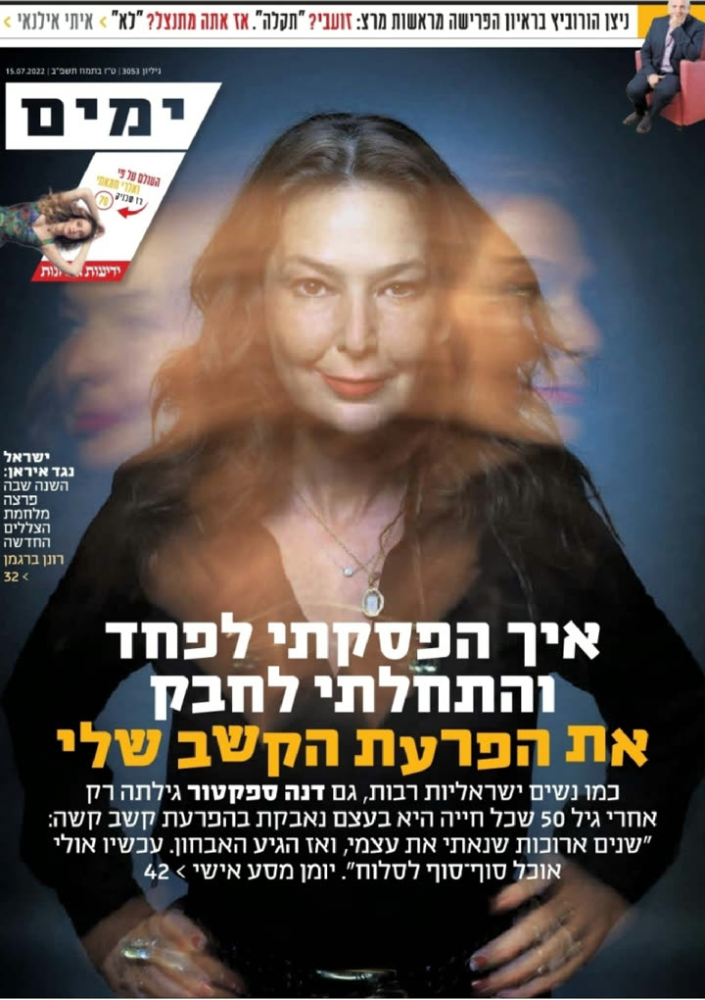
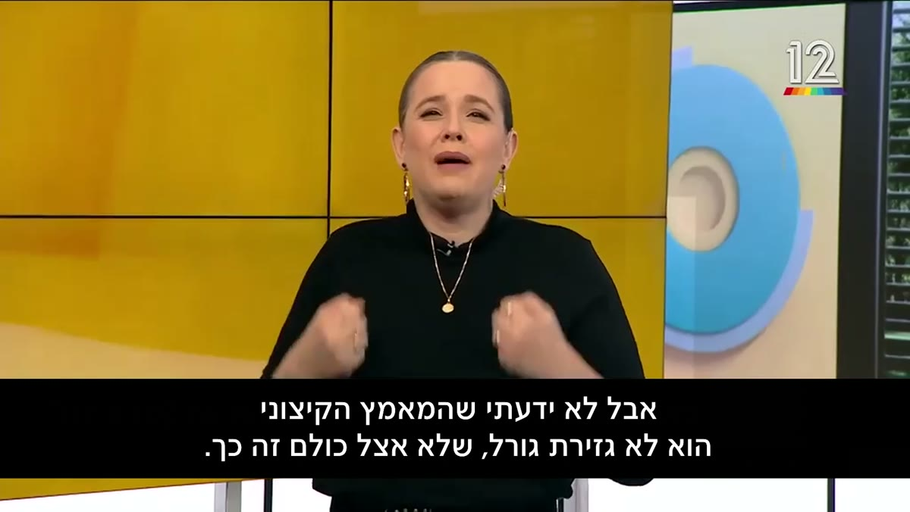

כפי שהופיעה ב:


ד״ר שירלי הרשקו, מומחית בינלאומית בקשב וזוכת המקום הראשון
על המחקר שהציגה בכנס העולמי להפרעות קשב
אבחון הפרעת קשב למבוגרים, מגיל 16
יש לך תחושת חוסר מימוש
למרות המאמצים שלך?
אולי זו הפרעת קשב
שתוקעת אותך?
אף פעם לא מאוחר לעזור לעצמך!
- מבחן ממוחשב ופגישה איתי בזום
- פגישה עם רופא נוירולוג מומחה בהפרעת קשב
- דוח מסכם ו-3 חודשי ליווי
אפשר לקבל החזר מביטוח בריאות פרטי

מכירים את התחושה?
מתחילים המון דברים, ומסיימים מעט
הכל נדחה לרגע האחרון, ואז הלחץ
הראש מתחיל לטייל באמצע שיחה
שוכחים, מאבדים, וחוזרים שוב הביתה
רשימות של רשימות, ושום דבר לא זז
יושבים שעות מול המחשב, ולא מתקדמים
ותמיד, אבל תמיד, אמרו לך
שיש לך פוטנציאל…
כי זה לא שמשהו לא בסדר איתך. יש לזה הסבר!
בדיקה ב-6 שאלות
האם כדאי לך לעשות
אבחון הפרעת קשב?
השאלון פותח על ידי פסיכיאטרים וחוקרים מארצות הברית, בשיתוף ארגון הבריאות העולמי.
סמנו כל משפט שקורה לכם לעיתים קרובות.
0 מתוך 6
זו לא אבחנה. את הפרעת הקשב מאבחן רק רופא מומחה.

נעים מאודד״ר שירלי הרשקו
כבר 20 שנה שאני חוקרת, מלמדת
ומטפלת באנשים עם הפרעת קשב.
עשיתי 5 תארים בפסיכולוגיה ובחינוך, כולל דוקטורט באוניברסיטה העברית.

את פוסט הדוקטורט עשיתי באנגליה, באוניברסיטת סאות'המפטון.

זכיתי במקום הראשון על המחקר שהצגתי בכנס העולמי לקשב בליסבון ב-2019.

כתבתי 6 ספרים בעברית וספר באנגלית, כולם רבי מכר.

היום אני מנהלת קהילה של יותר מ-60,000 אנשי קשב.
יצרתי פודקאסט עם 150 פרקים ומיליון האזנות.

זה הרבה יותר נפוץ ממה שנדמה
1 מכל 20
מבוגרים חיים עם הפרעת קשב
חמישה אחוז מהמבוגרים באוכלוסייה
הפרעת קשב לא נגמרת בגיל 18.
אצל רוב הילדים שיש להם הפרעת קשב, היא ממשיכה גם לבגרות.
ההיפראקטיביות בדרך כלל פוחתת עם השנים.
הקשיים האחרים נשארים.
והיא לא נשארת רק בקשב
הפרעת מטרייה
היא חולשת על כל תחומי החיים, נכנסת לכל פרט, זולגת לכל חור, לכל פתח.
עבודה
טעויות מחוסר תשומת לב, משימות שנתקעות, ותחושה שלא ממצים את מה שאפשר.
לימודים
תואר שלא נסגר, עבודה שנדחית, ומבחן שלא מספיקים לסיים.
זוגיות
״אמרתי לך עשר פעמים״, משימות שנשכחות, וויכוחים שחוזרים.
הורות
לנהל בית, ילדים ולוחות זמנים, כשגם הראש שלך לא מפסיק לרוץ.
כסף וניירת
חשבונות שנשכחים, החזרים שלא מגישים, וקניות של רגע.
אוכל ושינה
הולכים לישון מאוחר, קמים עייפים, ואוכלים בלי לשים לב.
רגשות
מ-0 ל-100 בשנייה, רגישות גבוהה, חרדה ומצב רוח ירוד.
הערך העצמי
שנים של ״עצלן״, ״לא מתאמץ״, ״חבל, יש לך פוטנציאל״.
אנחנו לא מאשימים אותה.
אנחנו מאשימים את עצמנו.
ואצל נשים, היא מתחבאת עוד יותר טוב
ההפרעה השקופה
אצל נשים, הפרעת קשב נראית אחרת.
היא שקטה. בלי לקפוץ על השולחן, בלי טלפונים מהמורה.
ולכן היא מתגלה מאוחר, לפעמים רק בגיל 40 או 50.
ובינתיים? מלקות את עצמן.
מה שכן קרה בעקבות האבחון ובעיקר בזכות הקבוצה, זו ההבנה שאני נורמלית, שאני לא עצלנית, סתומה וחסרת אחריות. עצם הידיעה הזו מחזקת אותי.

נשים רבות מוצאות דרך להתמודד עם הסבל שנים באמצעות חשיבה יצירתית ואפילו לא חושבות שיש משהו שונה בהן. ואז, בגיל מבוגר, את פתאום מרגישה שזהו, את קורסת.

פאולה מספרת בחדשות 12 על חוויית האבחון אצל ד״ר שירלי הרשקו, בגיל 45 · לצפייה בכתבהזו לא עצלנות.
יש לזה שם.
שואלים אותי אם כדאי ללכת לאבחון בגיל מבוגר?
כן, כן, כן.
חד משמעית כן.
כי הפרעת הקשב לא נעלמת בבגרות.
ויש כל כך הרבה שאבחון יכול לתת:
שם למה שעובר עליך
יש שם למה שמרגישים וחווים. ויש עוד הרבה אנשים כמוך.
סוף להאשמה העצמית
זה לא חוסר אופי ולא חוסר מאמץ. יש לזה הסבר.
לבדוק מה באמת המקור
לפעמים זה נראה כמו חרדה או דיכאון, ומתחת מסתתרת הפרעת קשב. האבחון בודק את זה.
טיפול שמתאים לך
כשיודעים מה המקור, אפשר לבחור טיפול שבאמת מתאים, במקום לנחש.
התאמות בלימודים ובמבחנים
תוספת זמן, חדר נפרד ועוד, לפי ההמלצות בדוח.
שמעתי על שירלי, הצטרפתי לקבוצה, התחלתי להבין שכנראה יש לי קש"ר, עשברתי אבחון, והתחלתי טיפול תרופתי... החיים שלי פשוט השתנו מקצה לקצה כבר תוך חודשיים... אחרי חיים שלמים שהרגשתי שאני לא מנצלת את כל הפוטנציאל שלי, אני סוף סוף מרגישה שאני על הגל.
אף פעם לא מאוחר להבין את עצמך.
למה עד היום זה לא נפתר?
להתאמץ עוד יותר
המאמץ לא פותר את הקושי. הוא רק מתיש.
עוד אפליקציה, עוד רשימה
הן עובדות שבוע, ואז נשארות בטלפון.
טיפול שלא מותאם לקשב
ייעוץ זוגי, דיאטנית או טיפול בחרדה, בלי לדעת שמתחת יש הפרעת קשב.
אבחון חלקי
מבחן ממוחשב לבד, או אבחון דידקטי, לא מאבחנים הפרעת קשב. את זה עושה רק רופא מומחה.
מה כן עוזר:
אבחון מקיף, שבודק מה באמת המקור.
אבחון מקיף, מקצועי ואישי, של שני מומחים עם 20 שנות ניסיון
אבחון הפרעת קשב
למבוגרים
בארץ ובעולם, בעברית ובאנגלית, ואפשר מהבית.

איך עובד האבחון?
מפגש 1 · אונליין
שאלון, מבחן ממוחשב
ופגישה איתי בזום
ממלאים שאלון מקיף, עושים מבחן ממוחשב שבודק את כל תפקודי הקשב, ונפגשים איתי בזום להסבר על התוצאות. אפשר לבדוק במבחן גם את ההשפעה של טיפול תרופתי, וזה לא חובה.

מפגש 2
פגישה עם רופא נוירולוג
מומחה בהפרעת קשב
בקליניקה בכפר סבא או בווידאו. בסוף הפגישה מקבלים אבחנה סופית והמלצה לטיפול.
בסיום
דוח מסכם בכתב
עם הממצאים, ההמלצות לטיפול וההתאמות.
3 חודשים
ליווי אחרי האבחון
אפשרות למעקב תרופתי להתאמה מיטבית, בטלפון או במייל.
קראתי את הדוח ואני חייבת לומר שוב תודה. הצלחתם להעלות על הכתב והגיליונות הרפואיים דברים שהתמודדתי איתם שנים ולא ידעתי שאפשר לטפל בהם.
יובל מספר על ה״וואו״ שחווה אחרי האבחון
מה מקבלים באבחון?
מהרגע שהחלטתי ללכת על זה, התהליך היה מהיר מאוד, חלק, ובעיקר משנה חיים.
משאירים פרטים, ואני חוזרת עם הסבר על האבחון.
אחרי האבחון עם ד"ר שירלי הרשקו הרגשתי הקלה ענקית. קיבלתי הכרה. קיבלתי שם. אני בסדר. לא צריכה לברוח יותר.
אני לא יכולה להסביר כמה זה משמעותי עבורי… זה רק התחלה של תהליך אבל כבר אני מבינה כמה משמעותי זה. רק ההבנה והידיעה- זה לא אני.
בשבועות שאחרי הפגישה עם ד"ר שירלי הרשקו שמעתי כל הזמן אסימונים יורדים. זה הסביר לי ולסביבה למה אני ככה, חי באקסטרה מאמץ, אף פעם לא נמצא ברגע. זה הסביר גם את החרדות ונתן תקווה שיש מה לעשות.
...שינית לי את החיים. אני ממש מרגישה היום מחוברת לעצמי יותר בקבלה עצמית בשינוי מטורף (בלי קשר לכדור). כאילו נולדתי מחדש...
אני הגעתי לאבחון דרך הכתבה הראשונה של שירלי שהיה בה שאלון קשב וחוץ מסעיף אחד היה בדיוק אני. אני בת 47 ש"הסתדרה", אבל עם רעיונות בלי שלא יוצאים אל הפועל. אחרי האבחון הכל חדש, אני מתמודדת עם חיים שלמים שצריך לשנות. כל החששות הקיומיים שמנעו ממני לעשות דברים בעסק ובפרטי ירדו. קיבלתי שליטה על החיים שלי.
אני מרגישה שאין לי מילים כדי להגיד את איך זה הרגיש לדבר עם מישהי שמבינה את הבפנים של איך שהראש שלי עובד ולראות את זה בחוץ על מסך.
חייבת לומר שאני כל כך שמחה שעשיתי את האבחון! זאת פעם ראשונה שאני יוצאת מאבחון ומטיפול אצל נוירולוג בתחושה שמקשיבים לי ושאני לא רק עוד מטופלת עם ״בעיות״...
...זה ממש גורם לי להרגשה טובה ואוף, אני שוב ככ שמחה שבחרתי לבוא אליך, אחת ההחלטות הטובות שלקחתי בחיים! 🙂
האבחון מתאים לך אם
- יש לך תחושה של תקיעות, מאמץ וחוסר מימוש, ואין לזה הסבר.
- לא אובחנת בילדות, או שעשית רק אבחון דידקטי.
- אובחנת לפני שנים, והאבחון כבר לא עדכני.
- צריך התאמות בלימודים או במבחנים.
- גרים בחו״ל? אפשר לעשות את האבחון גם באנגלית.
ולמי האבחון לא מתאים
לילדים מתחת לגיל 16. בשבילם יש אבחון לילדים.
הטיפול הוא לא רק תרופות
בדוח מקבלים המלצות שמותאמות אישית, וכמעט תמיד הן משלבות כמה דרכים:
טיפול התנהגותי
כלים מעשיים להתמודדות עם הפרעת קשב ביום יום.
אימון קשב
אימון ממוקד בתפקודים הניהוליים: לתכנן, להתחיל ולסיים.
ארגון זמן
בקורס ״רק רגע״, שבדקתי במחקר הפוסט דוקטורט שלי.
טיפול רגשי
CBT או Cog-Fun, כשזה מתאים.
התאמות
בלימודים ובמבחנים: תוספת זמן, חדר נפרד ועוד.
וטיפול תרופתי
רק אם הוא מתאים לך. אין חובה לאמץ אותו.
התרופה עוזרת להתרכז.
הטיפול ההתנהגותי מלמד מה עושים כשמרוכזים.
החזרים מביטוח
אפשר לקבל החזר מביטוח בריאות פרטי על פגישות הייעוץ עם הרופא המומחה, לפי תנאי הפוליסה.
את הקבלות אנחנו מנפיקים. קופת החולים והביטוח המשלים שלה לא מחזירים על אבחון פרטי.

שירלי, יש לי שאלה…
אפשר לעשות את כל האבחון מהבית?
כן. המפגש הראשון אונליין, והפגישה עם הרופא אפשרית בווידאו או בקליניקה בכפר סבא.
האבחון גם באנגלית?
כן, בעברית ובאנגלית, בארץ ובעולם.
מאיזה גיל?
מגיל 16.
האבחון מחייב לקחת תרופות?
לא. אין חובה לאמץ את הטיפול התרופתי, ויומלצו גם דרכי טיפול נוספות ואסטרטגיות להתמודדות.
זו לא סתם עוד תווית?
מעדיפים לחיות עם תוויות של דחיינים? עצלנים? תקועים? עצבניים? כשמכירים במקור, אפשר לטפל בו, במקום להסתובב עם שלל תוויות מקטינות הרבה יותר.
מבחן ממוחשב לא מספיק?
לא. מבחן ממוחשב לבד לא מאבחן הפרעת קשב. רק הפרשנות של רופא מומחה לממצאים, יחד עם ריאיון קליני, מביאה לאבחנה מדויקת.
ומה אם יתברר שאין לי הפרעת קשב?
גם זו תשובה חשובה. האבחון בודק אם הקושי מגיע מהפרעת קשב או ממקור אחר, כדי לדעת מה באמת יכול לעזור.
יש החזר מהביטוח?
אפשר לקבל החזר מביטוח בריאות פרטי על פגישות הייעוץ עם הרופא המומחה, לפי תנאי הפוליסה. קופת החולים והביטוח המשלים שלה לא מחזירים על אבחון פרטי.
אף פעם לא מאוחר
לעזור לעצמך!
משאירים פרטים, ואני חוזרת עם הסבר על האבחון.
נ.ב. מאובחנים רבים מספרים לי שאחרי האבחון הכל מתחבר כמו פאזל. ושבפעם הראשונה, הם מצליחים להרגיש חמלה כלפי הילד שהיו, במקום לכעוס עליו.